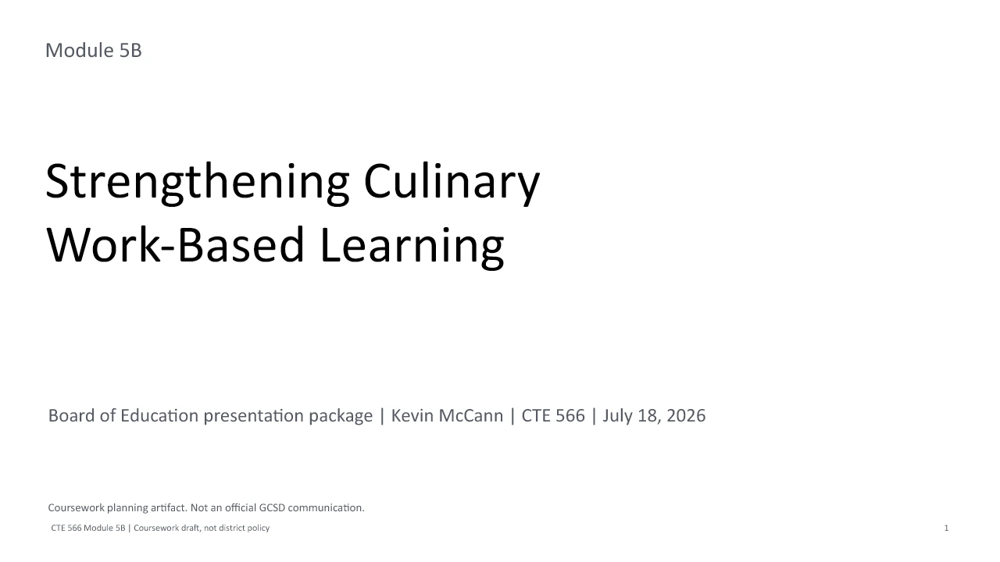

Greece Culinary Work-Based Learning
From classroom kitchen to career.
Greece Culinary Work-Based Learning connects classroom instruction, professional kitchen practice, school-based enterprise, and employer partnerships. Students build culinary competence, professional habits, and authentic experience as they move from classroom kitchen to career.

A coordinated sequence built on existing culinary practice
The public site serves students, families, employers, district leaders, and Board members without making unapproved external placement claims.
Students
See what you will do, how readiness works, and what opportunities open as you progress.
Families
Understand supervision, safety, readiness, transportation questions, hours, and evaluation.
Employers
Learn practical ways to support students without guessing at commitment level.
Board & District
Review the need, institutional fit, sustainability, and success measures.
Culinary Passport and Gateway System
Students collect evidence of safety, skill, attendance, professionalism, and reflection before moving into higher-responsibility experiences.
Student-Run Culinary Enterprise and Event Analytics
Catering, pop-ups, and school-based enterprise make production visible and teach students to inspect what they expect.
Senior Cooperative Experience and Portfolio
The senior opportunity is framed as the next structured extension: supervised workplace learning, employer feedback, portfolio evidence, and an exit presentation.